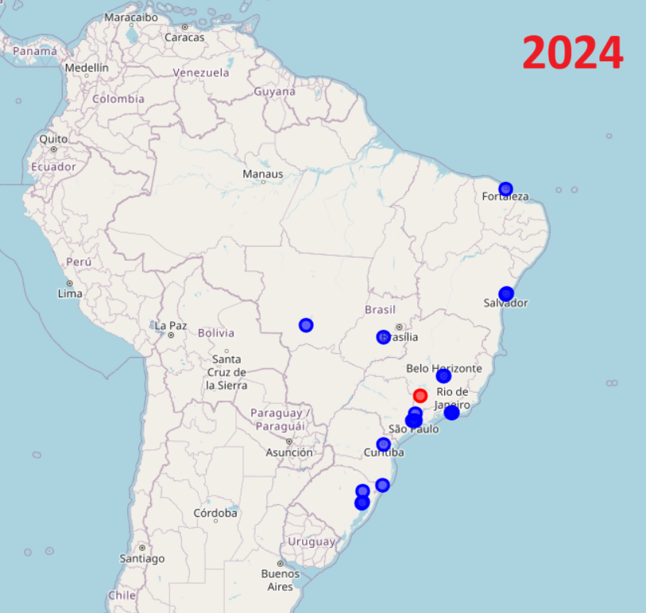

Dashboard Supermarket Sales Dataset (Kaggle)
Projetos em Power BI
Projetos em SQL
Conteúdo sendo adicionado
Python
Projeto em Python para calcular as distâncias entre estádios do Campeonato Brasileiro Série A 2024 e 2025 e armazenar em uma planilha. As Figuras mostram a descentralização do eixo sul-sudeste no comparativo entre anos.
📊 Visualizações:
